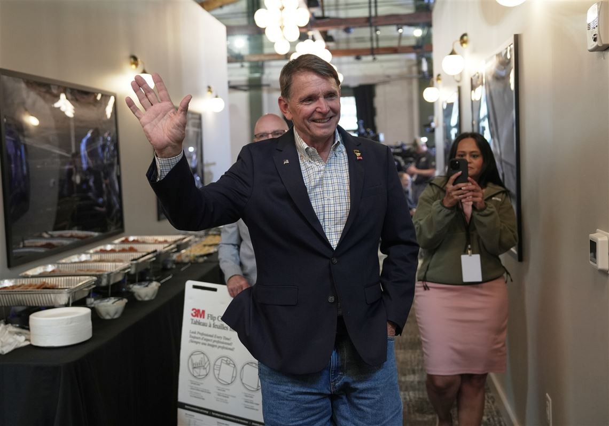

Breaking News
 May 20
May 20
byNoah Grayson
Republican Congressman Thomas Massie lost Kentucky’s GOP primary to Trump-backed challenger Ed Gallrein after one of the most expensive House primary races in U.S. history.
Republican Congressman Thomas Massie lost the Kentucky GOP primary to Trump-backed challenger Ed Gallrein in one of the most expensive House primary races in American history. The result marked a major political victory for Donald Trump as he continued reshaping the Republican Party around loyalty to his agenda. Gallrein, a retired Navy SEAL officer and farmer from Shelby County, defeated Massie after a brutal campaign fueled by more than $30 million in advertising and outside spending. Trump personally endorsed Gallrein and repeatedly targeted Massie for opposing key Republican initiatives and publicly criticizing parts of Trump’s second-term agenda. Massie had represented Kentucky’s 4th Congressional District since 2012 and built a national reputation as a libertarian-leaning conservative willing to challenge Republican leadership. He frequently opposed spending bills, surveillance policies, and military interventions, often placing him at odds with Trump and party leadership. The race became a national political test of Trump’s continuing influence over Republican voters. Trump framed the contest as a referendum on loyalty, repeatedly attacking Massie at rallies and on social media while encouraging allies to pour resources into Gallrein’s campaign. Gallrein campaigned heavily on his support for Trump and portrayed himself as fully committed to the president’s agenda. He emphasized his military service and described himself as “backup” for Trump during campaign appearances and advertisements. Massie conceded after the results became clear, becoming one of the highest-profile Republican incumbents defeated after openly challenging Trump. Political analysts immediately described the outcome as another demonstration of Trump’s dominant position inside the modern Republican Party.
The Kentucky primary evolved into the most expensive House primary race in U.S. history, with outside groups, political action committees, and national Republican organizations spending enormous sums to influence the outcome. Reports estimated total spending exceeded $32 million. Trump allies and Republican organizations flooded Kentucky airwaves with advertisements attacking Massie as disloyal to the president and obstructive to the Republican agenda. Defense Secretary Pete Hegseth and several prominent Trump supporters campaigned publicly against Massie during the race. Massie attempted to fight back by portraying himself as an independent conservative willing to stand up against both parties. He highlighted his record on government spending, surveillance reform, and transparency issues including support for releasing Jeffrey Epstein-related files. The campaign became deeply personal as Trump repeatedly mocked and insulted Massie during public appearances and online posts. Analysts described the race as one of Trump’s most direct political vendettas against a Republican incumbent who refused to fully align with him. Gallrein benefited from major financial backing and endorsements tied closely to Trump’s political network. Outside organizations supporting Trump aggressively targeted Massie through television ads, digital campaigns, and direct voter outreach operations across northern Kentucky. Despite the heavy spending against him, Massie remained competitive throughout much of the race and continued raising significant money from grassroots supporters nationwide. Reports indicated he raised more than $5 million during the campaign while using Trump’s attacks to energize his base. Political observers said the extraordinary scale of spending reflected how symbolic the race became for both Trump allies and anti-establishment conservatives within the Republican Party. The contest ultimately evolved into a national struggle over the party’s future direction and ideological identity.
Massie’s defeat reinforced the growing perception that Trump remains the dominant force inside the Republican Party. Analysts described the Kentucky primary as another example of how Republican politicians who openly challenge Trump increasingly face severe political consequences. The race drew comparisons to previous Republican figures such as Liz Cheney and Adam Kinzinger, who either lost office or left Congress after opposing Trump. Massie became one of the few remaining Republicans willing to publicly resist parts of Trump’s agenda while remaining inside the party mainstream. Trump treated the Kentucky race as a major personal political project. He repeatedly framed Massie as insufficiently loyal and encouraged Republican voters to replace him with a candidate fully committed to the MAGA movement. The result also strengthened perceptions that Trump endorsements remain extremely powerful in Republican primaries. Gallrein entered the race with limited political experience but rapidly became a major contender after receiving Trump’s support. Political analysts argued the outcome sends a warning to other Republicans considering opposition to Trump’s agenda. The loss illustrated that even well-known incumbents with deep local support can find it difficult to survive when Trump turns on them personally. At the same time, some conservatives expressed concern that ideological diversity within the Republican Party is shrinking as loyalty to Trump becomes increasingly central. Massie had often represented libertarian and anti-establishment conservative viewpoints that differed from Trump’s populist nationalism. Gallrein’s victory speech focused heavily on supporting Trump’s agenda and bringing “audacity” from his military service into Congress. He pledged to remain aligned with Trump’s priorities if elected in the general election. The Kentucky result therefore became one of the clearest political signals yet that Trump continues exercising enormous control over Republican primary voters and the broader direction of the GOP heading into future national elections.
The Kentucky primary took place alongside several important Republican contests across the country that collectively highlighted Trump’s continuing political strength. Multiple Trump-backed candidates secured victories in races viewed as tests of his influence. In Kentucky’s Senate primary, Republican Congressman Andy Barr won the GOP nomination to replace retiring Senator Mitch McConnell. Barr had endorsed Gallrein against Massie, reflecting broader alignment between establishment Republicans and Trump-backed candidates during the election cycle. The Kentucky Senate race attracted national attention because McConnell’s retirement opened a rare Senate seat in a strongly Republican state. Analysts noted that the contest reflected ongoing generational and ideological changes inside Kentucky Republican politics. CNN reported that several state primaries in Georgia, Alabama, Pennsylvania, and Kentucky were closely watched for signs of voter attitudes toward Trump’s second administration and the future direction of both political parties. Political strategists also viewed the Massie race as important because it tested whether Republican voters would continue supporting candidates with independent conservative identities or increasingly prioritize alignment with Trump personally. Democrats meanwhile monitored the Kentucky race closely despite the district’s strong Republican lean. Some Democratic strategists argued that intense Republican infighting and ideological purges could create vulnerabilities in future elections, though Kentucky’s 4th District remains heavily conservative. The outcome also reflected broader transformations inside Republican politics where loyalty, branding, and alignment with Trump increasingly outweigh traditional conservative ideological divisions involving spending, foreign policy, and civil liberties. The 2026 primary season thus continued to show how Trump’s influence stretches beyond presidential politics into congressional races, party identity, fundraising networks and the future shape of the Republican coalition across the country.

Noah Grayson is a U.S. daily news reporter covering national stories, breaking events, and human-interest developments.